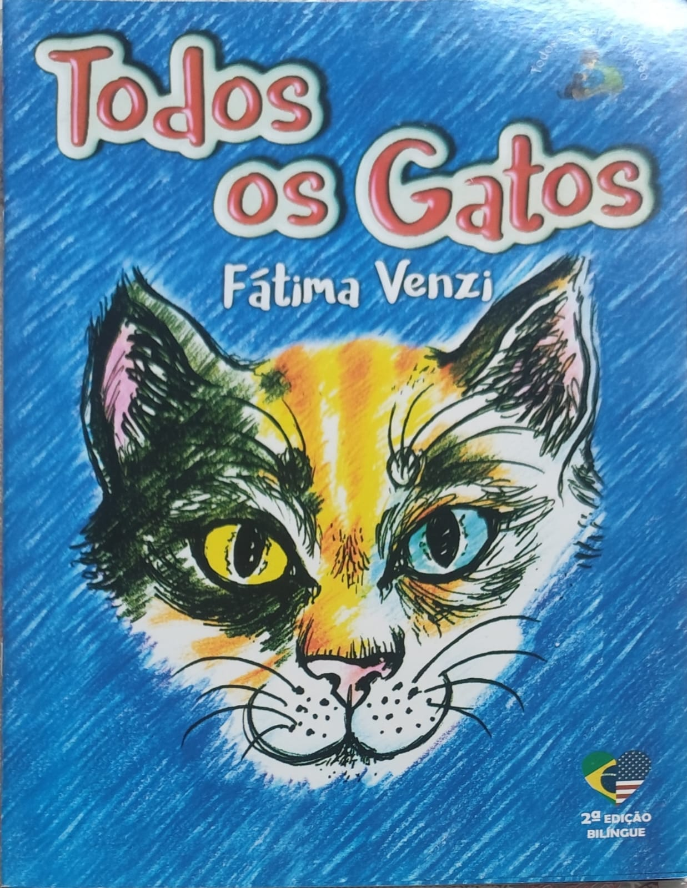

A Autora
Fátima Venzi é autora, professora, palestrante e criadora de conteúdo. Ela é autista e usa a escrita para transformar histórias reais em livros para crianças. É a criadora do projeto Histórias para Ensinar e acredita que toda criança merece uma história para chamar de sua.
As obras dela são bilíngues e feitas para a primeira e a segunda infância. Além de escrever, a Fátima também é Mestre em Reiki e terapeuta.
Formação e Trajetória
A formação dela une o Direito e a educação. É Bacharel em Direito, Especialista em Direito Público, Especialista em Docência Universitária e Licenciada em Letras. Também dá cursos de extensão nas áreas de Ensino e Direito.
Na área de educação inclusiva, tem cursos sobre inclusão social, inteligências múltiplas, discalculia, dislexia, hiperatividade e déficit de atenção na escola, o uso do lúdico no ensino, a avaliação escolar e o currículo em ação.
Coleções e Livros
A Fátima já publicou seis livros, todos bilíngues e com histórias reais para crianças. Entre eles estão a coleção infantil Todos os Gatos e a coleção infanto-juvenil Lua Crescente.

O livro Todos os Gatos fala sobre o cuidado e a proteção aos animais, o respeito à diversidade, a inclusão, o amor e a empatia. É um dos preferidos das crianças.
![Capa do livro 'O menino que decidiu vencer', de Fátima Venzi. Em um fundo de tons escuros e abstratos, com traços geométricos e pinceladas em diversas cores, aparece a imagem de um menino de cabelos escuros em atitude de oração, com as mãos unidas e os olhos fechados. Ao fundo, vê-se uma composição artística com um rosto humano parcialmente sobreposto, criando um efeito de reflexão e introspecção. O título está destacado ao centro em letras grandes e claras. No canto superior esquerdo, aparece o selo da coleção Lua Crescente, representado por uma lua amarela.](pasta-de-img/Menino-venceu.jpeg)
Da coleção Lua Crescente, O Menino que Decidiu Vencer é uma história real de superação, coragem e esperança.
Uma Pitada de Sophia
Uma Pitada de Sophia é o primeiro livro infantil com uma história real sobre a Síndrome de Treacher Collins, que é uma doença rara. A Fátima também é mentora da Lei de Conscientização para a Educação sobre essa síndrome.
Academias e Reconhecimento
A Fátima faz parte de várias academias e catálogos literários, no Brasil e no exterior, como a ALPAS 21, o Catálogo Brasileiro de Autores Literários Contemporâneos (Literato Litteraria Academia Lima Barreto), a AILB, a Academia Focus (Nova York e Brasil) e o Letras Viajante.
Atuação, Projetos e Terapias
Ela trabalha com projetos educacionais, revisão e assessoria de livros, cultura popular, formação cultural, artesanato e culturas afro-brasileiras.
É a criadora do projeto Histórias para Ensinar e participa, desde 1998, do projeto Mala do Livro, da Biblioteca Nacional de Brasília. Como terapeuta, também trabalha com Reiki, Florais de Bach, aromaterapia, auriculoterapia, naturopatia e shiatsu.
"Toda criança merece uma história para chamar de sua." - Fátima Venzi